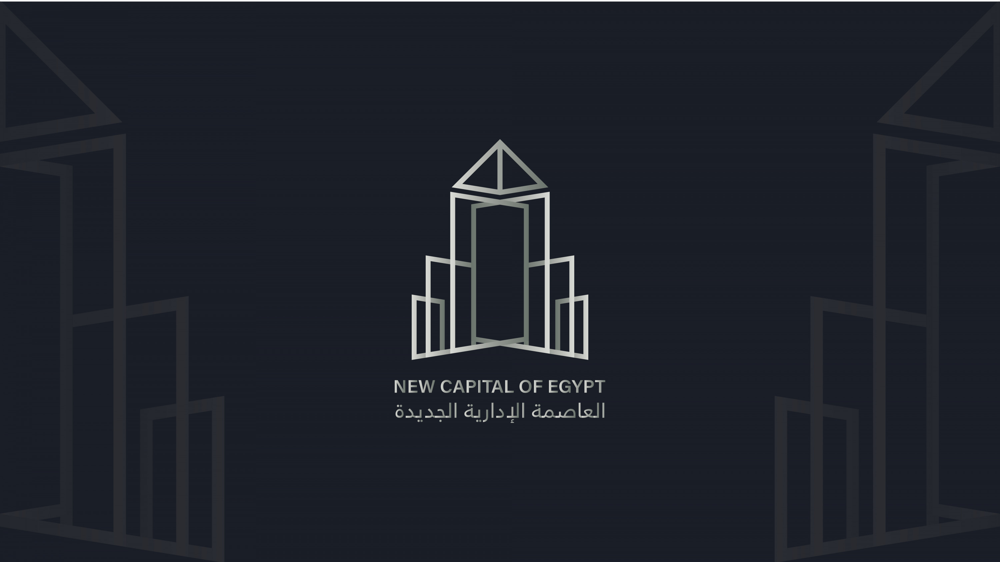
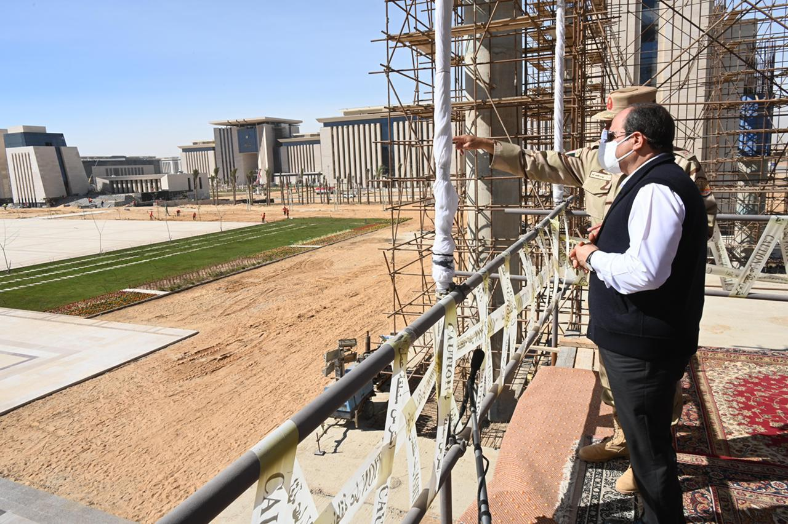
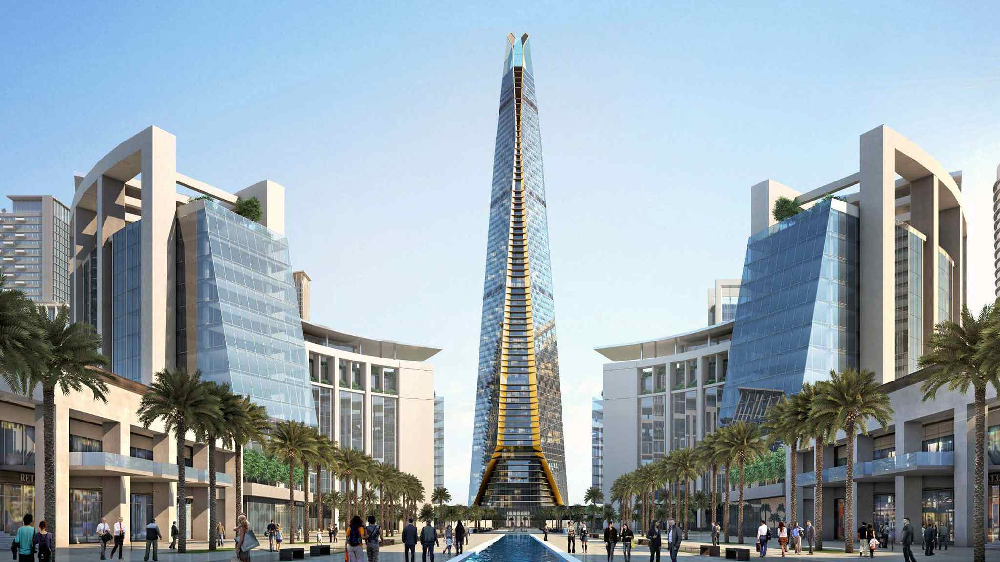
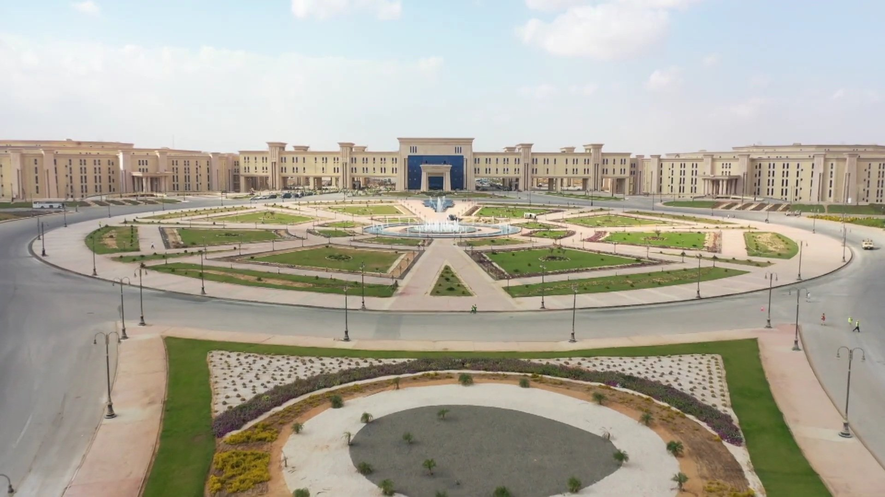
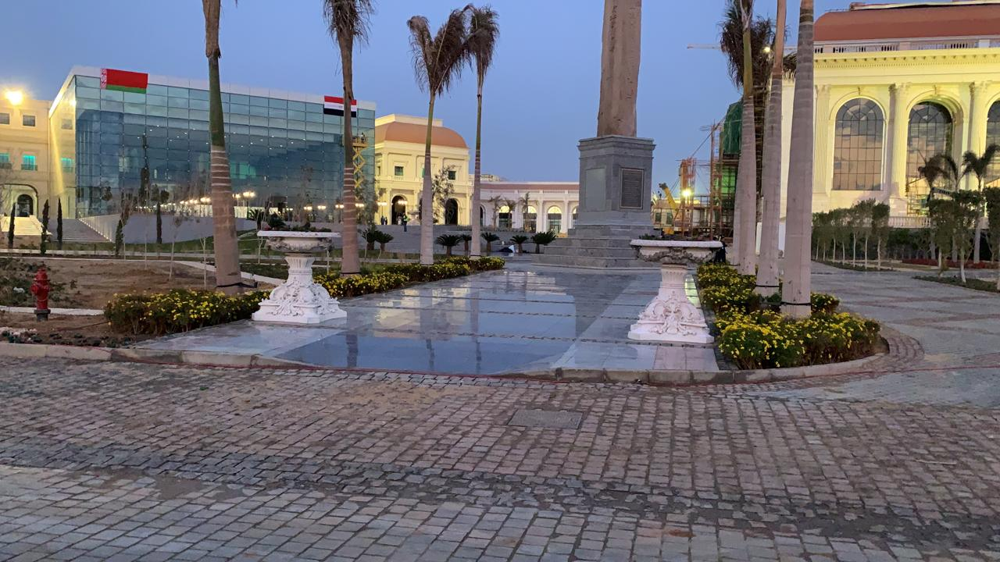
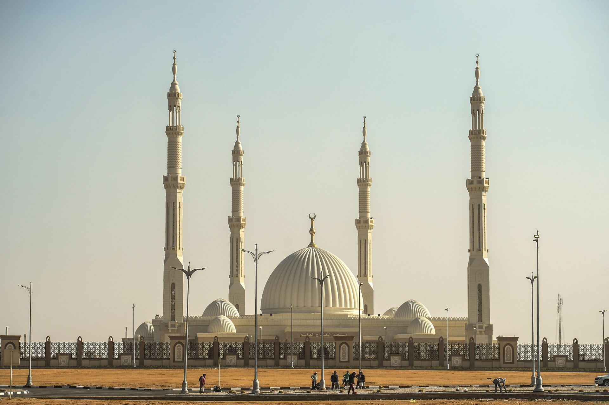
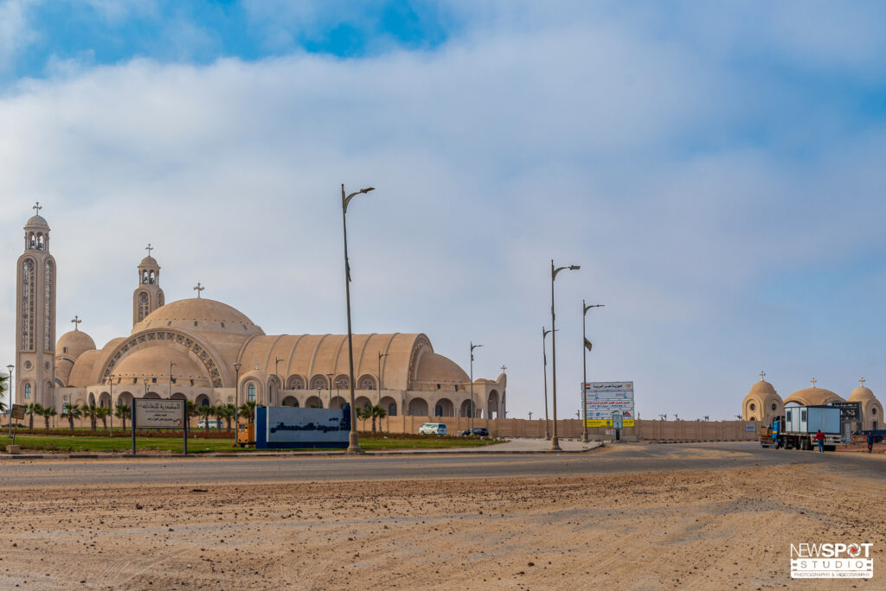
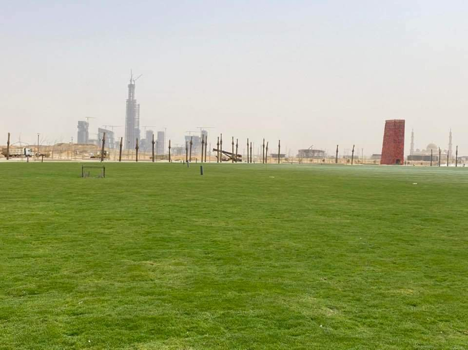

العاصمة الإدارية الجديدة عاصمة جمهورية مصر العربية المستقبلية ، مدينة مصرية جديدة من مدن الجيل الرابع ف التكنولوجيا، تقع في محافظة القاهرة، وتُدار من خلال شركة العاصمة الإدارية للتنمية العمرانية، أنشأت بقرار رئيس جمهورية مصر العربية عبد الفتاح السيسي رقم 57 لسنة 2016 وأُعلن عن إنشائها خلال مؤتمر دعم وتنمية الاقتصاد المصري المُقام في مدينة شرم الشيخ في الفترة من 13 إلى 15 مارس 2015 وتم التعاقد مع الإمارات العربية المتحدة علي أنشائها خلال فعاليات المؤتمر. تبلغ المساحة الإجمالية للمدينة حوالي 170 ألف فدان (688 كم²)، وهي أكبر من مساحة سنغافورة وأكبر أربعة أضعاف من مدينة واشنطن عاصمة الولايات المتحدة الأمريكية، تبعد عن مدينة القاهرة بحوالي 60 كم في اتجاه الشرق، وعن مدينة السويس حوالي 65 كم في اتجاه الغرب، ومن المخطط أن تستوعب ما يقرب من 6.5 مليون نسمة عند الانتهاء من مرحلها الإنشائية بالكامل
أُنشئت العاصمة الإدارية للتخفيف من حدة الازدحام بمدينة القاهرة، ولتكون العاصمة الجديدة ومقر لحكم مصر بنهاية يونيو 2022، حيث سيتم نقل مقرات رئاسة الجمهورية، رئاسة الحكومة، مجلس النواب، مجلس الشيوخ، الوزارات، الهيئات والجهات الحكومية، وكذلك سفارات وقنصليات الدول الأجنبية، وستكون المركز المالي لمصر حيث يوجد بها حي المال والأعمال الذي سيضم المقرات والمكاتب الإقليمية لكبرى الشركات والبنوك المصرية والعالمية، تُقسم المدينة إدارياً إلى 20 حي ومنطقة مختلفة الاستخدامات، وستضم أيضاً على سبيل المثال مقر قيادة الدولة الاستراتيجي، مدينة الفنون والثقافة، مدينة مصر الدولية للألعاب الأولمبية، مدينة المعرفة، والنهر الأخضر الذي سيمتد لأكثر من 35 كم مما يجعله أكبر ستة أضعاف من سنترال بارك في مدينة نيويورك
هو المركز المالي للعاصمة الإدارية الجديدة، تم إنشائه ليكون مركزاً ومقراً إقليمياً لكبرى الشركات والبنوك المصرية والعالمية، يقع غرب الطريق الدائري الإقليمي بين محوري محمد بن زايد الشمالي والجنوبي، على مساحة حوالي 1703 كم²، وبحجم استثمارات يصل إلى نحو 3.4 مليار دولار أمريكي يقوم بإنشائه "CSCEC" الصينية، يضم الحي في مرحلته الأولى 18 برج بارتفاعات تتراوح بين 100 و 400 متر، تنوع بين 10 أبراج بنشاط إداري، 5 أبراج بنشاط سكني، و3 أبراج بنشاط مختلط، من أهم الأبراج الموجودة بالحي البرج الأيقوني والذي يبلغ ارتفاعه حوالي 385 متراً وسيصبح أطول برج في مصر وقارة أفريقيا ويضم كذلك أبراج انفنتي بارتفاع 200 متر، دايموند بارتفاع 200 متر، وتاچ مصر بارتفاع 170 متر، وغيرهم، ومن المقرر تسليم المشروع بالكامل في فبراير 2023.
هو المقر الجديد لوزارة الدفاع المصرية يهدف إنشاء المقر الجديد إلى أن يكون الأكبر في الشرق الأوسط، يمتد المقر على مساحة إجمالية قدرها 22000 فدان، ويضم المقر 13 منطقة - لكل منها دورها الخاص - مما يجعله أكبر مقر دفاعي في العالم. الأوكتاجون يعد جزء من مؤسسة كبيرة، والتي تضم أماكن عبادة ونوادي وفنادق ومدارس وملاعب ومشاريع سكنية ومراكز تسوق ومستشفيات ومجمعات للخدمات المدنية والإدارية. المكان مؤمن بوحدتين من الحرس الجمهوري، ووسائل أمنية أخرى
هي مؤسسة ثقافية فنية مصرية، أنشأت كي تكون منارة للإبداع الفني والفكري والثقافي في مصر على مساحة 127 فدان وتم افتتاحها في 20 نوفمبر 2021 تضم المدينة العديد من المنشأت أهمها متحف عواصم مصر ]دار أوبرا، مسرح رمسيس الثاني، قاعة احتفالات كبرى بسعة 2500 شخص، بالإضافة للمسرح الصغير 2 قاعة تستوعب 750 شخص ويقام به العروض الخاصة، ومسرح الجيب الذى يستوعب 50 شخصا، ومسرح الحجرة، ومركز الإبداع الفني، قاعة العرض السينمائي التى سيتم ربطها بالأقمار الصناعية لعرض الحفلات الفنية المختلفة، ثلاث قاعات للتدريب على الغناء والعزف، استوديو تسجيل صوتي ملحق به ثلاث قاعات للمونتاج، متحف عن الأوبرا وتاريخها بمصر ومتحف فن حديث به آخر أعمال الفنانين المصريين، متحف للفن الحديث بحديقة الأوبرا به محتويات متنوعة لفنانين عالميين ومصريين، مكتبة موسيقية بها الأرشيف الأوبرالي العالمي للاستماع والاطلاع، كافتيريات، قسم لفنون الرسم والنحت والموسيقى والأدب والشِعر، بالإضافة إلى مكتبة العاصمة الإدارية التي تسع 6000 شخص
هو أحد مساجد المدينة ذات الطراز المعماري الإسلامي الحديث والمميز يقع في مدخل العاصمة الإدارية على الطريق الدائري الأوسطي، أقيم المسجد على مساحة 106 فدان منها تقريباً (8600م²) هي مساحة مبنى المسجد، و7000م² ساحة خارجية مخصصة للصلاة، أسفلها "بدروم" به مصلى يومي "مسجد مصغر" للرجال والسيدات، قاعات لتحفيظ القرآن، أماكن للوضوء، مكتبة، ومكاتب إدارية، وباقي المساحة الخارجية مخصصة للمباني والطرق والمناظر الطبيعية، يسع المسجد بالكامل 17000 مصل تقريباً تشمل 6500 دور أرضي (الصحن الرئيسي)، 1200 دور أول "دور الميزانين" (مصلى سيدات)، 7000 مساحة خارجية، 2000 المسجد المصغر
هي كاتدرائية قبطية، تم افتتاحها في 6 يناير 2019 خلال الاحتفال بعيد الميلاد وخلال زيارة الرئيس المصري عبد الفتاح السيسي والبابا تواضروس الثاني. تعد هذه الكاتدرائية الأكبر حجما وسعة بمنطقة الشرق الأوسط ، حيث تقع على مساحة 63 الف مترا مربعا ولها سعة لأكثر من 8 الاف شخصا.
هي سلسلة شبيهة بالنهر من المتنزهات الحضرية ، وعند الانتهاء بالكامل سوف تمتد لأكثر من 35 كيلو متر، وتغطي مساحة إجمالية قدرها 6200 فدان، مما يجعلها ستة أضعاف حجم سنترال بارك في مدينة نيويورك، وجميع الأحياء العشرين بالعاصمة الجديدة سيتم ربطها بالنهر الأخضر الذي يحاكي مجرى نهر النيل في وسط القاهرة، ويتميز المشروع بأنه سيكون مفتوح للزيارات مجانا للمقيمن في العاصمة الأدارية، القاهرة الجديدة والقاهرة. سارية العلم العاصمة الإدارية أكبر سارية علم في العالم، يبلغ ارتفاعها 207.8 متراً تم رفع علم مصر على السارية في 27 ديسمبر 2021. تقع السارية في ساحة الشعب وتتضمن مدرجات تسع 1300 فرد، تتكون السارية من 10 وصلات بجانب وصلة متحركة مسئولة عن تحريك العلم، ووزن السارى 1040 طن حديد والعلم طوله 60 مترا × 40 مترا.
